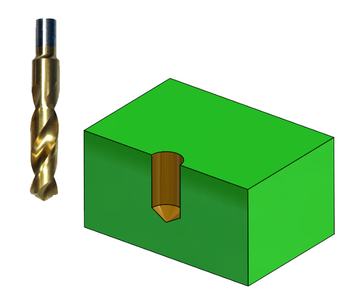
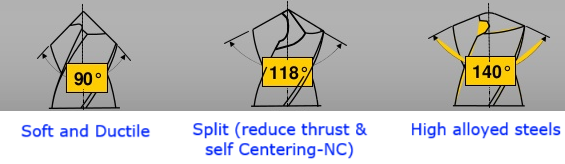
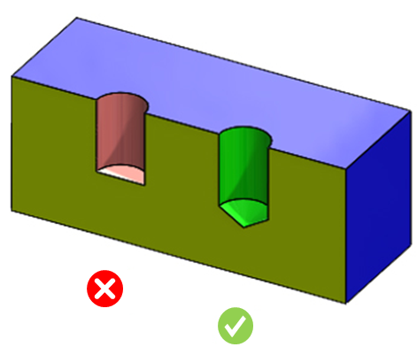

止まり穴は平底で作成してはなりません。
平底穴は、後工程（例えばリーマ加工）で問題を引き起こします。
平底穴には高度な加工工程が必要となります。


本ルールは、ドリル穴の底部が円すい形状であるかどうかをチェックします。そのため、構成情報は不要です。

注記:
ドリル工具はデータベースで構成されています。ルールマネージャーダイアログボックスでドリル径を確認するには、標準穴径を編集してください。
最大ドリル工具径は、標準穴径ルール構成で選択されている単位選択オプションに基づいて解析に考慮されます。